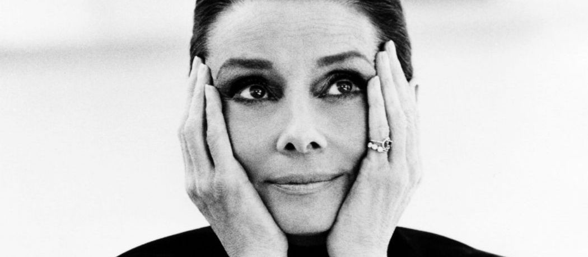
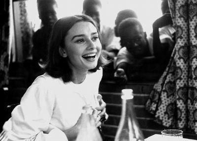
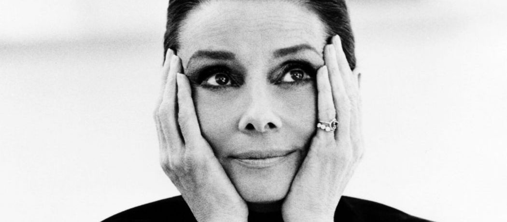
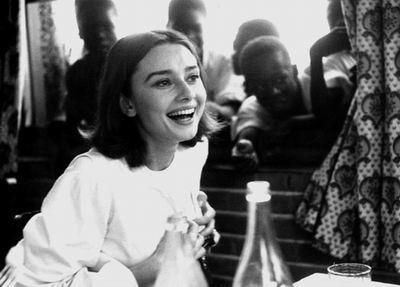

Here's a time line of Audrey Hepburn's life:
- 1929 - Born in Ixelles, Brussels, Belgium
- 1935 - Her mother moved with Hepburn to her family's estate in Arnhem. However her father wanted Hepburn educated in England.
- 1937 - So she moved to kent, England to study at a small independent school in Elham.
- 1939 - During World war II Hepburn's mother moved her daughter back to Arnhem in the hope that, as during the First World War, the Netherlands would remain neutral and be spared a German attack. While there, Hepburn attended the Arnhem Conservatory.
She had begun taking ballet lessons during her last years at boarding school, and continued training in Arnhem under the tutelage of Winja Marova, becoming her "star pupil".
- 1940 - After the Germans invaded the Netherland Hepburn used the name Edda van Heemstra, because an "English-sounding" name was considered dangerous during the German occupation.
- 1942 - After her uncle's death, Hepburn, Ella and Miesje left Arnhem to live with her grandfather, Baron Aarnoud van Heemstra, in nearby Velp. Around that time Hepburn performed silent dance performances in order to raise money for the Dutch resistance effort It was long believed that she participated in the Dutch resistance itself.
- 1945 - After the war ended in 1945, Hepburn moved with her mother and siblings to Amsterdam, where she began ballet training under Sonia Gaskell, a leading figure in Dutch ballet, and Russian teacher Olga Tarasova.As the family's fortunes had been lost during the war, Ella supported them by working as a cook and housekeeper for a wealthy family.
- 1948 - Hepburn made her film debut playing an air stewardess in Dutch in Seven Lessons (1948), an educational travel film made by Charles van der Linden and Henry Josephson. Later that year, Hepburn moved to London after accepting a ballet scholarship with Ballet Rambert, which was then based in Notting Hill. [40][d] She supported herself with part-time work as a model, and dropped "Ruston" from her surname.
After she was told by Rambert that despite her talent, her height and weak constitution (the after-effect of wartime malnutrition) would make the status of prima ballerina unattainable, she decided to concentrate on acting.
- 1952 - Hepburn became engaged to James Hanson, whom she had known since her early days in London. She called it "love at first sight", but after having her wedding dress fitted and the date set, she decided the marriage would not work because the demands of their careers would keep them apart most of the time.
- 1953 - Hepburn had her first starring role in Roman Holiday (1953), playing Princess Ann, a European princess who escapes the reins of royalty and has a wild night out with an American newsman (Gregory Peck). The producers of the movie initially wanted Elizabeth Taylor for the role, but director William Wyler was so impressed by Hepburn's screen test that he cast her instead.
The film was a box-office success, and Hepburn gained critical acclaim for her portrayal, unexpectedly winning an Academy Award for Best Actress, a BAFTA Award for Best British Actress in a Leading Role, and a Golden Globe Award for Best Actress – Motion Picture Drama
- 1954 - Following her success in Roman Holiday, Hepburn starred in Billy Wilder's romantic Cinderella-story comedy Sabrina (1954), in which wealthy brothers (Humphrey Bogart and William Holden) compete for the affections of their chauffeur's innocent daughter (Hepburn). For her performance, she was nominated for the 1954 Academy Award for Best Actress, while winning the BAFTA Award for Best Actress in a Leading Role the same year.
The same year Hepburn met American actor Mel Ferrer, having been suggested that they star together in a play. The meeting led them to collaborate in Ondine, during which they began a relationship. Eight months later, on 25 September 1954, they were married in Bürgenstock, Switzerland.
- 1961-1967 - Breakfast at Tiffany's and continued success
- 1968 - Hepburn met her second husband, Italian psychiatrist Andrea Dotti, on a Mediterranean cruise with friends in June 1968.
- 1989 - Hepburn was appointed a Goodwill Ambassador of UNICEF. On her appointment, she stated that she was grateful for receiving international aid after enduring the German occupation as a child, and wanted to show her gratitude to the organisation.
- 1990 - Hepburn went to Vietnam, in an effort to collaborate with the government for national UNICEF-supported immunisation and clean water programmes.
- 1992 - Upon returning from Somalia to Switzerland in late September 1992, Hepburn began suffering from abdominal pain. While initial medical tests in Switzerland had inconclusive results, a laparoscopy performed at the Cedars-Sinai Medical Center in Los Angeles in early November revealed a rare form of abdominal cancer belonging to a group of cancers known as pseudomyxoma peritonei.
- 1993 - On the evening of 20 January 1993, Hepburn died in her sleep at home
"How shall I sum up my life?
I think I've been particularly lucky."
— Audrey Hepburn
If you have time, you should read more about this incredible human being on her Wikipedia entry.
 


